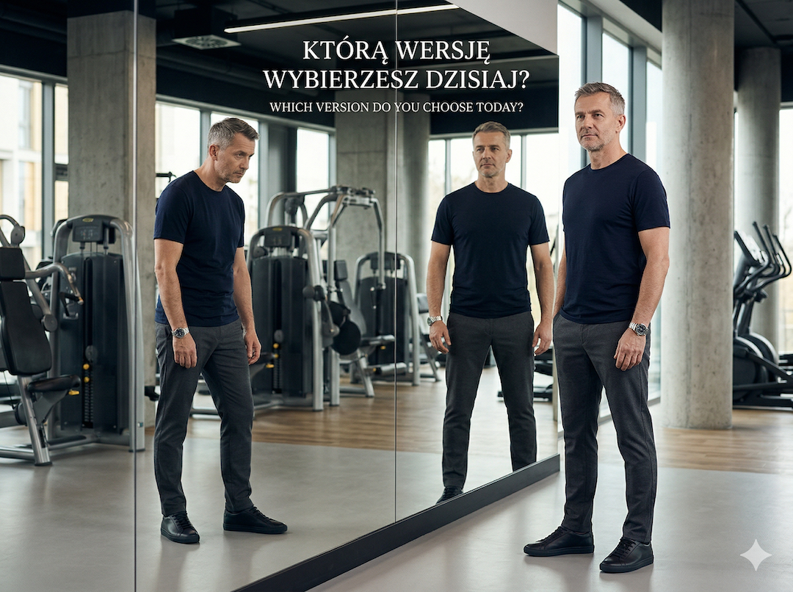
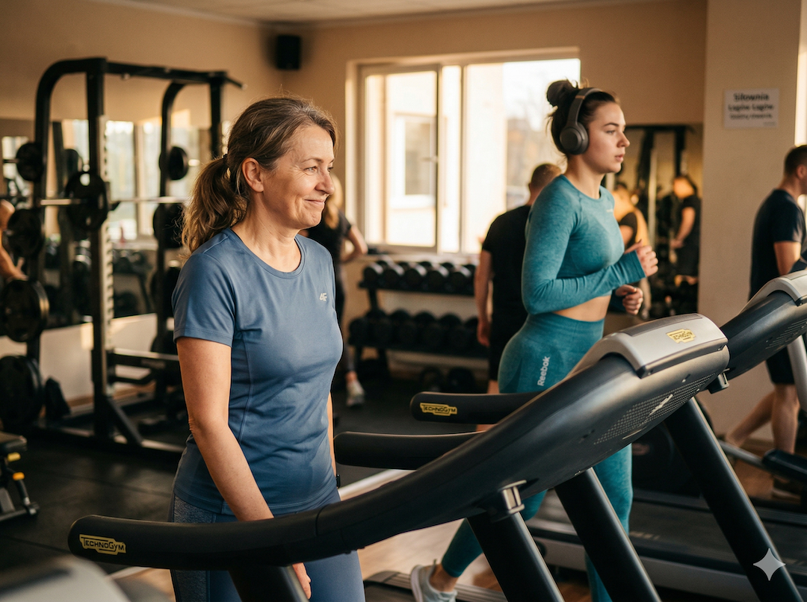
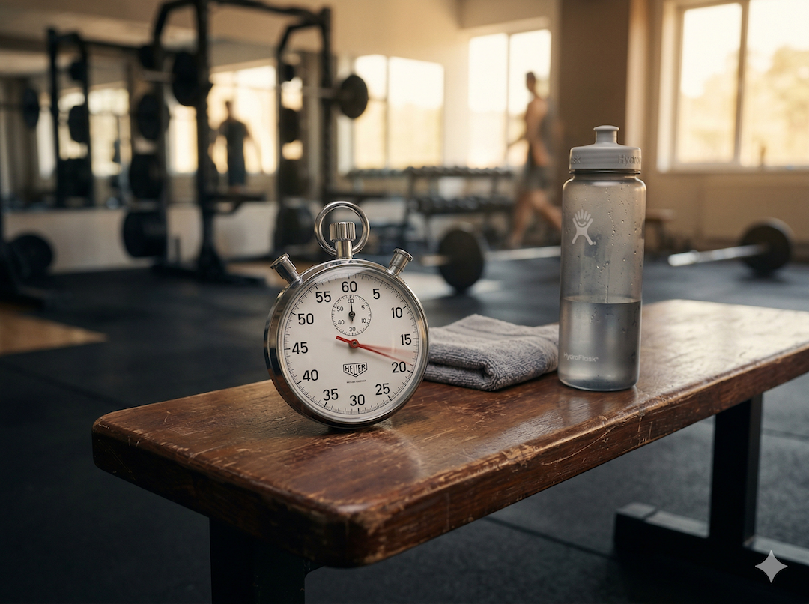
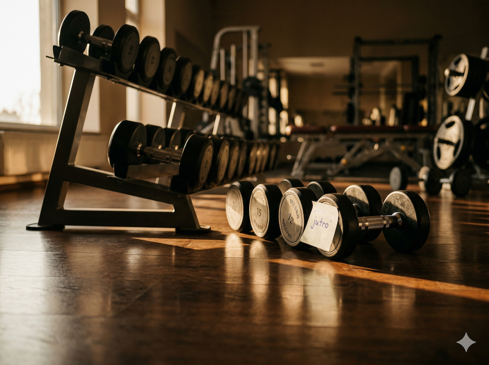

Wielu z nas zaczyna na siłowni z głową pełną dobrych chęci i lekkim stresem. Problem w tym, że po pięćdziesiątce kilka nawyków, które kiedyś uchodziły płazem, potrafi dziś szybko odbić się na stawach i regeneracji. Jeśli dopiero startujesz, sprawdź też jak zacząć na siłowni po 50-tce, a potem wróć do tej checklisty.

Siedem błędów. Zaczynamy od tych najdroższych.
Błąd #1: Porównywanie się z innymi na sali
Na sali zawsze ktoś podniesie więcej. Twoim punktem odniesienia ma być poprzedni tydzień, nie cudze tempo.
Błąd #2: Pomijanie rozgrzewki, bo „nie ma czasu”
10 minut rozgrzewki to nie strata czasu. To ubezpieczenie całego treningu. Po 50-tce to obowiązek.

Błąd #3: Trening mimo bólu stawu, bo „tak trzeba”
Zmęczenie mięśni jest normalne. Ból stawu to sygnał ostrzegawczy. Ignorowanie go zwykle kończy się dłuższą przerwą.
Błąd #4: Wstrzymywanie oddechu podczas ćwiczeń
Naturalny oddech zwiększa bezpieczeństwo ruchu. Wstrzymywanie oddechu pod obciążeniem podnosi ryzyko niepotrzebnych przeciążeń.
Błąd #5: Trening tej samej grupy mięśniowej dzień po dniu
Mięsień regeneruje się po treningu, nie w trakcie. Dla większości początkujących po 50-tce sensownym minimum jest 48 godzin przerwy.

Błąd #6: Zbyt szybkie dokładanie ciężaru
Skok o 20-25% wygląda ambitnie, ale tkanki łączne nie nadążają. Lepiej progresować małymi krokami (2,5-5%).

Błąd #7: Brak planu („robię, co czuję”)
Losowe maszyny i ćwiczenia rzadko budują postęp. Prosty plan (3 ćwiczenia, 3 serie, regularność) wygrywa z improwizacją.
W skrócie: mniej ego, więcej systemu. Jeśli chcesz od razu przejść do działania, gotowy układ tygodnia znajdziesz w 30-dniowym planie treningowym. A gdy największą przeszkodą jest regularność, pomocny będzie też tekst o budowaniu nawyku treningu.
Prosta odpowiedź na te siedem błędów
- Porównania: jedynym punktem odniesienia jest Twój poprzedni tydzień.
- Rozgrzewka: 10 minut. Zawsze.
- Ból: zmęczenie mięśni to tak, ból stawu to stop.
- Oddech: wydech przy wysiłku, wdech przy powrocie.
- Regeneracja: minimum 48 godzin dla tej samej grupy mięśniowej.
- Obciążenie: mały progres tydzień do tygodnia, nie jednorazowy skok.
- Plan: prosty, ale powtarzalny i zapisany.
Źródła
- PubMed ID 1623367: Effect of breathing techniques on blood pressure response to resistance exercise.
- PMC8863611: The Valsalva Maneuver Revisited.
- PubMed: wyszukiwanie publikacji o manewrze Valsalvy i ryzyku sercowo-naczyniowym przy dużych obciążeniach.
- ACSM Guidelines for Exercise Testing and Prescription (11th ed.).
- CDC: Physical Activity Guidelines for Older Adults.
- Frontiers in Psychology: badania o intensywności wysiłku, adherence i formowaniu nawyków.
- Senior Fitness: rekomendacje dotyczące rozgrzewki i regeneracji u starszych dorosłych.